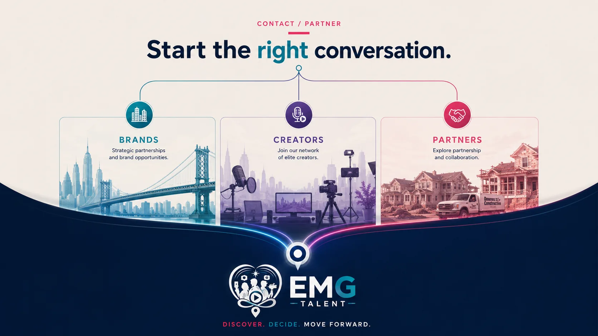

I’m a brand
Owned media, creator campaigns, performance, local intent, and activation opportunities.

The best partnerships begin with a clear understanding of what each side is trying to build. Tell us where you are, what you need, and what a successful outcome looks like.
Owned media, creator campaigns, performance, local intent, and activation opportunities.
Representation, profile development, partnerships, and content opportunities.
Pay-per-call, affiliate, local provider, service buyer, or strategic relationships.
Share the opportunity, the constraint, or the outcome you are working toward. You do not need to arrive with the solution already named.
Most meaningful partnerships begin with a problem that crosses several disciplines: traffic without trust, attention without action, demand without infrastructure, or data without a clear decision attached to it.
Tell us where the journey is breaking, what you are trying to build, and what a real outcome would look like. We will help determine whether EMG is the right partner—and which parts of the ecosystem belong in the answer.
That clarity matters more than forcing every conversation into a predefined service.
We work best with partners willing to explain the real constraint, share what has already been tried, and define success in business terms.
From there, we can determine where EMG creates leverage, what should remain outside the scope, and how the work can build value beyond the first result.
A few things people usually want to know before they fill out the form.
A member of the EMG team reviews it directly. No automated funnel, no hand-off to a call center. You hear from a real person who read what you wrote.
Most inquiries get a reply within one to two business days. If the request is time-sensitive, say so in the message and it gets flagged.
No. Tell us the problem, not the solution. Part of the first conversation is figuring out which parts of EMG actually apply.
No. The inquiry itself is just a conversation. Scope, terms, and commitment get worked out afterward, once there is a clear fit.
All three. The inquiry form routes brand, creator, local and performance, and strategic partnership questions to the right place, so pick whichever door matches your situation.